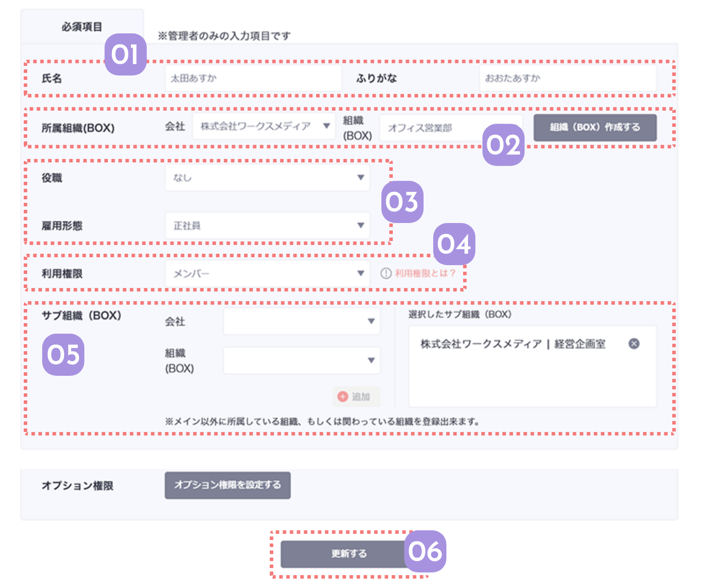

必須項目はメンバー登録と同じ項目で、入力した内容が反映されます。
Spotwriteを利用するために最低限必要なメンバー情報のため、主に管理者が入力します。

03
役職と雇用形態を入力する
登録したいメンバーの役職と雇用形態を設定します。
役職と雇用形態は、あなたの会社独自のものをマスタ設定から設定することができますが、ここのプルダウンからも簡易的に登録できます。
04
Spotwriteの権限を設定する
Spotwriteの閲覧の権限を選択します。デフォルトが「メンバー」となっており、これは全ての記事がみられる権限です。
閲覧する記事に制限をかけたいメンバーのみ「準メンバー」や「ビジター」の権限に変更します。
 関連機能
関連機能

-
05
サブで所属する組織を入力する
メインで所属している組織の他に、複数の組織を兼任するメンバーにサブで所属する組織を設定することもできます。
サブで設定すると、その組織のサブメンバーとして表示されるようになります。